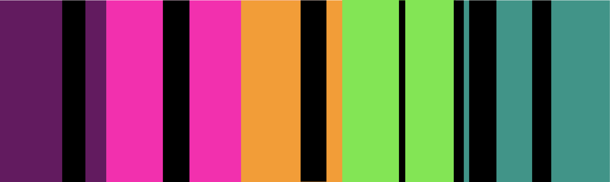

The plot is definitly a bit creepy at times, and the author doesn't shy away from gritty real anxiety, but the narrator is just so erneast and authentic that the book breezes by.
This book is a staple of the breezy genre. Often sold in airports, don't be fooled! It's still rich with life and character, suggesting that human connection is at the core of a meaningful existence.
This book is hella dense and has lots of plot line to follow. But Greek mythology is kinda hard to take seriously since Percy Jackon's debut, so it reads like a fun light sexy novel.
Feminity, sexuality, power, this book explores all contemporary buzzwords while staying rooted in the layerd stories of mythology. By merging Greek mythology with a modern narration, this book is a goldmind for nuance.
This book is as light as breezy books come, with its humor and creative email-format. The narrator's struggles with depression and the realness of the female characters intensifies and elevates it from a typical chic lit.
The romance is believable and intresting. You will relate to every character and want to send a copy to your best friends
This is a romance book through and through, so it definitly maitains an optimistic nature. But, its exploration of religous romance intensifies the Pride and Prejudice motifs and keeps the reader on their toes.
There is something about the Pride and Prejudice storyline that just taps into something so intresting and deep about love. This book does the same with seemingly complete opposite personalities falling in love.
It's long, which normally implies unbreezy, but for some reason the characters are so relatable and authentic that the book breezes. The book dives into intense ideas but grounds the story in perspective and hindsite with flashbacks and flashforwards.
If this book isn't a slice of life I don't know what is. The story explores unique ideas about selfhood, identity, love and friendship in a way that doesn't weigh the reader down, but lifts them up.
This book is fun! Told through a collage of emails, recipes and news clippings, this story is creative, humerous, and whimsical. The novel succesfully tackles intense topics like mental health, broken marriage and creative blocks, but for some reason it feels as light as a Chihuli sculpture on a rainy Seattle day.
Bernadette is such a dynamic layered character- the author does a magnificent job painting the picture of a complex women, with rich creative abilities and her path towards self realization.
{{breezy}} books are the types of fiction you read in a day, but are not worthy of the label “trash.” You may find yourself underlining some lines, the covers are usually nice and the plot is chill enough to be considered a beach-read. But {{breezy}} books still carry some weight and insights, thereby circumventing the demeaning labels of "chic-lit"/ "beachread."